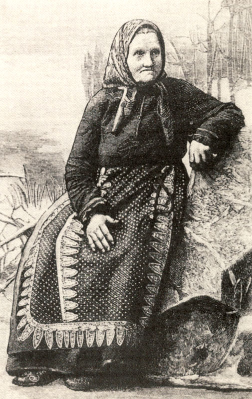
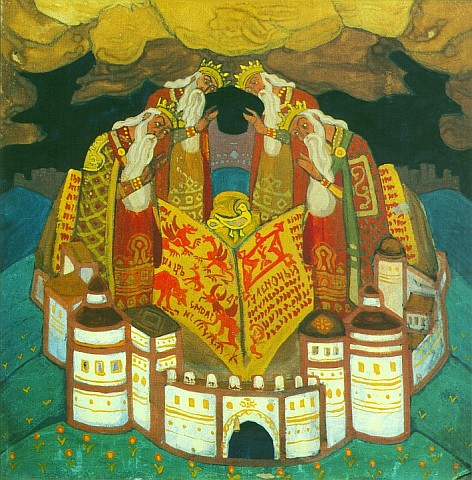
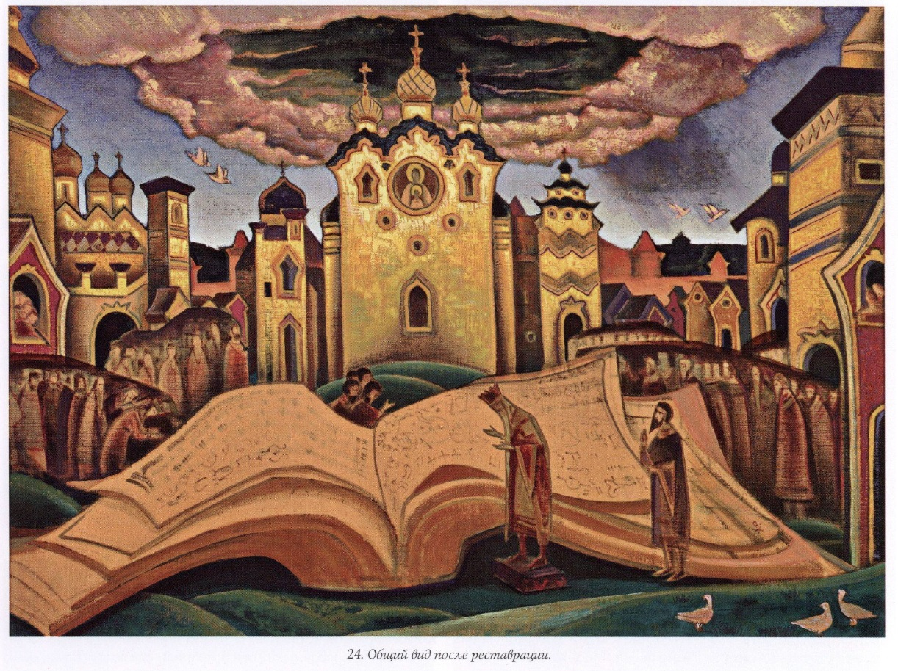

Фон — Н. К. Рерих, «Голубиная книга», 1922 (Государственный музей Востока). Сегодня: жанр, происхождение, запись голоса Федосовой, сюжет, небольшая викторина, духоборы и современное исполнение.
Жанр
Духовный стих
Эпическая песня на религиозный сюжет — «народная Библия» неграмотной Руси.
Исполнители — калики перехожие: нищие странники, слепцы, паломники; позже — сказители Русского Севера.
Стоит между книжностью и фольклором: сюжеты из Писания и апокрифов, язык и напев — былинные.
«Голубиная книга» — самый известный и, по словам исследователей, «важнейший» стих: он отвечает на вопросы о происхождении мира и человека.
Духовные стихи — это «русская народная вера», изложенная самим народом, а «Голубиная книга» — её космология.
по Г. П. Федотову, «Стихи духовные» (Париж, 1935)
Федотов Г. П. Стихи духовные. Русская народная вера по духовным стихам. Париж, 1935 (М., 1991); Бессонов П. А. Калеки перехожие. М., 1861–1864.
Подчеркнуть: духовный стих — не церковное песнопение, его пели вне храма. Калики — профессиональные странники-певцы.
Происхождение
Откуда пришла книга
Сложение: кон. XV — нач. XVI в., Псково-Новгородские земли; окончательная форма — к нач. XVII в.
Первая запись: сборник Кирши Данилова (сер. XVIII в., Урал) — «Голубина книга сорока пядень».
Более 20 вариантов в XIX в.: Варенцов (1860), Бессонов (1861, 16 вар.), Тихонравов.
Источники: апокрифы «Беседа трёх святителей», «Вопросы Иоанна Богослова на горе Фаворской», «Беседа Иерусалимская»; образ небесной книги — Апокалипсис, гл. 5.
Почему «голубиная»?
Глубинная — книга «глубины премудрости». Св. Авраамия Смоленского (XII–XIII вв.) обвиняли в чтении «глубинных книг».
В народе слово переосмыслено через голубя — символ Святого Духа.
Есть и версии-гипотезы: параллель с иранским «Бундахишн» (В. Н. Топоров), с евр. «сефер тора» (А. А. Архипов).
Никитина С. Е. Голубиная книга // Православная энциклопедия. Т. 12; ЭСБЕ, ст. «Голубиная книга»; Мочульский В. Н. Историко-литературный анализ стиха о Голубиной книге. Варшава, 1887.
Главное: стих — народная переработка книжных апокрифов в форме вопросов и ответов.
Голос XIX века
Ирина Федосова

И. А. Федосова (1827–1899)
Великая заонежская вопленица из д. Кузаранда; знала десятки тысяч стихов.
Впервые записана Е. В. Барсовым в 1867 г. («Причитанья Северного края»).
В январе 1896 г. в Москве Юлий Блок записал её на фонограф: 19 стихов «Голубиной книги».
Каждый раз пела стих по-новому: у Барсова — 45 стихов, у Агреневой-Славянской — 129.
Что в осьмомъ году, осьмой тысяче,
Восьмой тысяче, да марте месяце,
Восьмой тысяче, марте месяце,
Наставала тученька темная,
Наставала тученька темная,
Ай, темна — грозна да страховитая,
Ай, темна — грозна, страховитая,
Со громомъ туча́ да со молниёй,
Со громомъ туча́ да со молниёй,
На тую пору да на Фавор гору,
Как на тую пору да на Фавор гору,
Ко тому кресту да ко Господънему,
Ко тому кресту ко Господнему
Ко тыимъ мощам да ко Адамовым,
Ко тыимъ мощам ко Адамовым, Выпадала Книга Голубиная, Выпадала Книга Голубиная…
Кузнецова В. П. И. А. Федосова и её духовные стихи // Рябининские чтения — 2015. Петрозаводск: Музей-заповедник «Кижи», 2015.
Включить запись. Обратить внимание: зачин «в осьмом году, осьмой тысяче» (т. е. 7008 г. от сотворения мира = 1500 г., год ожидания конца света) типичен для стиха о «Мучениях Егория» — Федосова свободно комбинировала формулы. Повторы строк — черта живого исполнения.
Сюжет · Завязка
Книга из тёмной тучи
Восходила туча сильна, грозная,
Выпадала книга Голубиная…
Никто ко книге не приступится…
Приходил ко книге премудрый царь,
Премудрый царь Давыд Евсеевич…
«Писал сию книгу сам Исус Христос…
Читал сию книгу сам Исай-пророк,
Читал он книгу ровно три года,
Прочитал из книги ровно три листа».
Оксенов А. В. Народная поэзия. СПб., 1908
Книга огромна — «в долину сорока пядей, поперёк двадцати». Собираются сорок царей, сорок князей, сорок калик — но открыть её может лишь Давид, да и он «прочесть не может», а пересказывает «по старой памяти».

Н. К. Рерих. Ранний вариант «Голубиной книги», 1911. Смоленский музей-заповедник
Книга символизирует божественное знание, непостижимое разумом: даже пророк Исайя за три года прочёл лишь три листа. Знание передаётся не чтением, а памятью — как и сам стих.
Сюжет · Космогония
Мир — отблеск Бога
А и белой свет — от лица божья,
Со(л)нцо праведно — от очей его,
Светел месяц — от темичка,
Темная ночь — от затылечка,
Заря утрення и вечерняя — от бровей божьих,
Часты звезды — от кудрей божьих!
Сборник Кирши Данилова, сер. XVIII в.
Ветры буйные — от Свята Духа,
Дробен дождик — от слёз Христа…
Оксенов, 1908
Не творение «из ничего» (ex nihilo), а исхождение мира из тела Бога — мир как Его отблеск и проявление.
Космос строится по образу лица и головы: верх неба — «темечко», ночь — «затылок».
В. Н. Топоров сближает эту картину с древнейшими мифами о мире из тела первосущества (ведийский Пуруша, иранский Бундахишн).
Топоров В. Н. Голубиная книга // Мифы народов мира. Т. 1. М., 1980; Кирша Данилов. Древние российские стихотворения. М., 1977.
Замечание: в разных вариантах части тела меняются (солнце — то от лица, то от очей). Устойчив сам принцип.
Сюжет · Антропогония
Человек — малый мир
Наши помыслы — от облац небесныих,
У нас мир-народ — от Адамия,
Кости крепкие — от камени,
Телеса наши — от сырой земли,
Кровь-руда наша — от черна моря.
От того у нас в земле цари пошли:
От святой главы от Адамовой…
От того крестьяны православные:
От свята колена от Адамова.
Оксенов, 1908
Макрокосм ↔ микрокосм: тело человека собрано из стихий мира — камня, земли, моря, облаков.
Мир порождён из Бога, человек — из мира: две зеркальные цепи соответствий.
Отсюда же — социальный порядок: цари от головы Адама, князья-бояре — от «мощей», крестьяне — от колена.
Никитина С. Е. Голубиная книга // Православная энциклопедия; ср. апокриф «Беседа трёх святителей» (о восьми частях Адамова тела).
Сюжет · Диалог
Волотоман и Давыд

Н. К. Рерих. «Голубиная книга», 1922. Государственный музей Востока, Москва
Волотоман Волотоманович спрашивает — от «волот», великан. В вариантах — Володимир, Малодумар («малодумный» против премудрого).
Давыд Евсеевич — библейский Давид, автор Псалтыри, отвечает «по памяти, как по грамоте».
Форма «вопрос — ответ» унаследована от апокрифической «Беседы трёх святителей».
Проговорит Волотомон-царь…
«Ты премудры царь Давыд Евсеевич!
Подыми ты книгу голубиную,
Подыми книгу, распечатывай…»
Кирша Данилов
На картине Рериха книга раскинута как огромные крылья птицы — отсылка к «голубиному» имени.
Символика
«Которая всем … мати?»
Вторая серия вопросов выстраивает иерархию мира: у каждого рода вещей — своя «мать», главная святыня.
город
Иерусалим
«тут у нас среда земле» — центр мира
река
Иордан
в ней крестился Христос
гора
Фавор
место Преображения (у Кирши — Сион)
камень
Алатырь
на нём Христос «распущал книгу Голубиную»
древо
Кипарис
из него — крест Распятия
трава
Плакун
выросла из слёз Богородицы
птица
Стратим
вострепенётся — море всколыхнётся
зверь
Индрик
ходит под землёй, прочищает ключи
Алатырь (А. Н. Веселовский) — алтарный камень Сионской церкви, где впервые принесена бескровная жертва; «бел-горюч камень» русских заговоров, мифический центр мира.
Веселовский А. Н. Разыскания в области русского духовного стиха. СПб., 1879–1891; ЭСБЕ, ст. «Голубиная книга».
Философский смысл
Правда и Кривда
Это Кривда с Правдой соходилися,
Промежду собой бились-дрались,
Кривда Правду одолеть хочет… Правда пошла на небеса
К самому Христу, Царю Небесному; А Кривда пошла у нас вся по всей земле…
От Кривды стал народ неправильный…
Оксенов, 1908
Финал: сон о двух зверях (зайцах) — Давид толкует его как битву Правды и Кривды.
Мир устроен свято, но Правда ушла с земли — отсюда трагизм народного мировоззрения.
Для Федотова этот эпизод — «основной опыт социальной философии народа».
Влияние: Буслаев и Веселовский, Рерих, Ремизов («Посолонь»), русский символизм.
Федотов Г. П. Стихи духовные. М., 1991; символ зайца-правды — из «Беседы трёх святителей» (ЭСБЕ).
Викторина · 1 / 3
?
Какой город — всем городам отец?
КиевЦарьградИерусалимНовгород
Ответ · 1 / 3
Иерусалим — центр земли
Иерусалим-город городам отец.
Почему тот город городам отец?
Потому Иерусалим городам отец:
Во тем во граде во Иерусалиме Тут у нас среда земле.Оксенов, 1908
Иерусалим — «пуп земли»; здесь же «собор-церковь всем церквам мати» с гробницей и ризами Христа.
Викторина · 2 / 3
?
Какая рыба — всем рыбам мати?
ОсётрЩукаКитБелуга
Ответ · 2 / 3
Кит-рыба — опора мира
Кит-рыба всем рыбам мати.
Почему же кит-рыба всем рыбам мати? На трех рыбах земля основана.
Стоит кит-рыба — не сворохнется;
Когда ж кит-рыба поворотится,
Тогда мать-земля восколыбнется, Тогда белый свет наш покончится.
Оксенов, 1908
А кит-рыба — всем рыбам мати… На семи китах земля основана.Кирша Данилов
Образ взят прямо из «Беседы трёх святителей». Число китов в вариантах разное — три, семь, тридцать.
Викторина · 3 / 3
?
Какая гора — всем горам мати?
АфонАраратФаворГолгофа
Ответ · 3 / 3
Фавор — гора Преображения
Фавор-гора всем горам мати.
Почему Фавор-гора горам мати? Преобразился на ней сам Исус Христос,
Исус Христос, Царь Небесный, свет,
С Петром, со Иоанном, со Иаковом…
Показал славу ученикам своим.
Оксенов, 1908
Именно на Фавор, по версии Федосовой, падает книга: «На тую пору да на Фавор гору… Выпадала Книга Голубиная».
Но у Кирши Данилова другой ответ: «Сионская гора — всем горам мати». Кто сказал «Сион» — тоже прав.
Сокращённый стих стал богослужебным псалмом № 89 «Царь Давыд Осеевич». Записан В. Д. Бонч-Бруевичем в Канаде от Ф. Объедкова (1909); ещё в 1857 г. — в Воронежской губ.
Псалом имеет «два смысла»: за буквой скрыто иносказание.
…у меня есть книга голубиная… белый свет от сердца Господнего, красно солнце от лица Его…
Псалом 89
Кит-рыба — это земные державцы. Они своими узаконениями… удерживают народ в темномрачном основании. Плакун-трава — …чады, которые нарождены от Господа… идут напротив власти.
«Разъяснение» духоборца П. В. Батурина
Животная книга духоборцев / Под ред. В. Д. Бонч-Бруевича. СПб., 1909. С. 108–110; Варенцов В. Сборник русских духовных стихов. СПб., 1860.
Кит, на котором стоит земля, у духоборов — государство, которое держит народ во тьме. Космология превращается в социальную критику.
Сегодня
Перепев Александра Маточкина
Сказитель и этнический певец, выпускник СПбГУ; в репертуаре — более 70 старин: былины, баллады, духовные стихи.
Работает с изданиями XIX в. и полевыми записями северных рек.
Свёл 10 вариантов стиха из петрозаводского собрания (2015) в единый текст ≈ 350 строк и издал его рукописной книгой «Северная старина. Голубиная книга».
Рекомендация: послушать «Голубиную книгу» в его исполнении — тот же сюжет, что у Федосовой, но целиком, как «старину» северного сказителя.